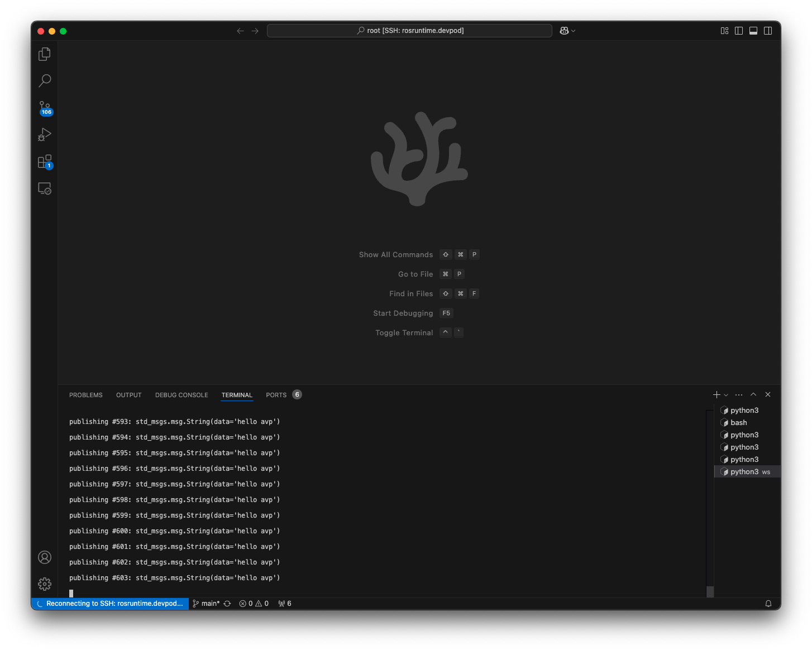
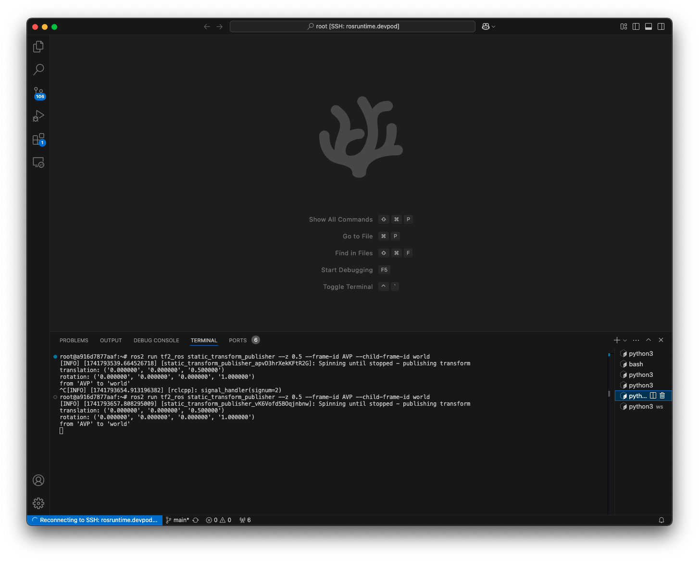
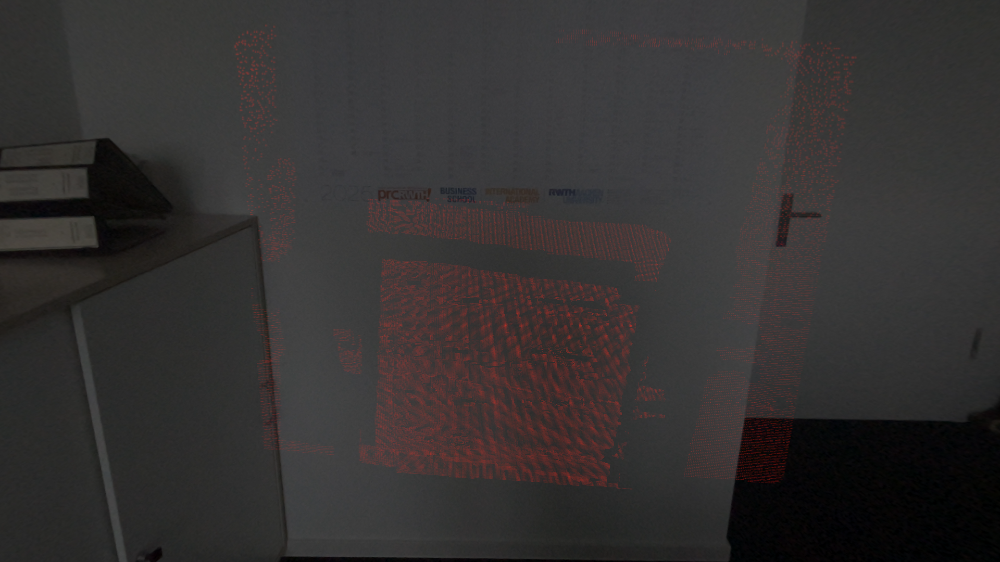

This web page hosts demonstrations of ROS Integration with Apple Vision Pro generated as part of master thesis.
Anchor user interfaces to hands for better usability
String message received using ROS Bridge Subscription Op

String message published and received using ROS Bridge
Load Robot Model at the specified static transform, localized with Image Anchor

UR5 MoveIt Execute Trajectory using Gesture Inputs from Apple Vision Pro
Realtime rendering of PointCloud2 received over ROS Bridge
